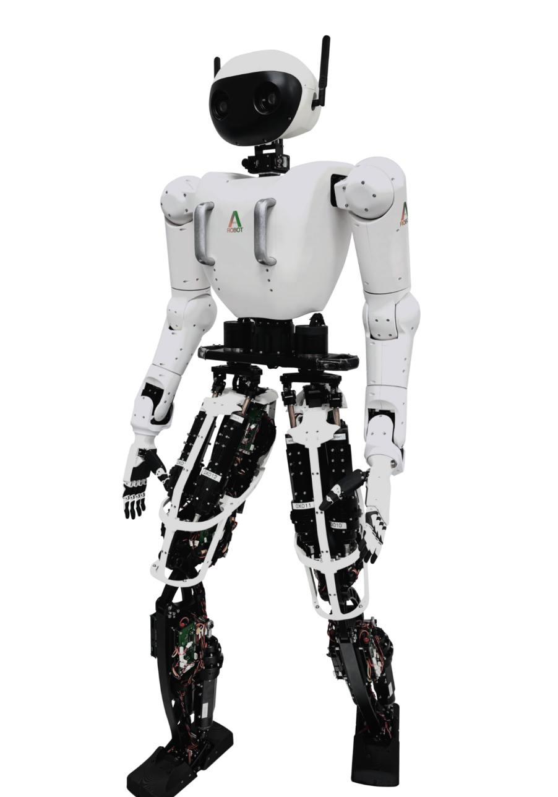
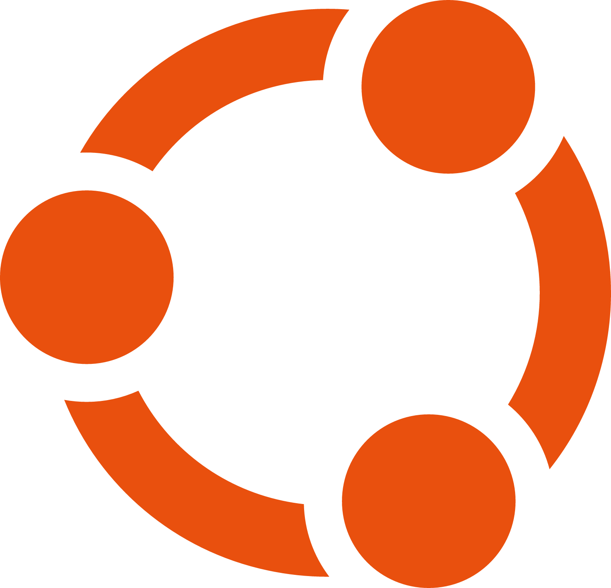
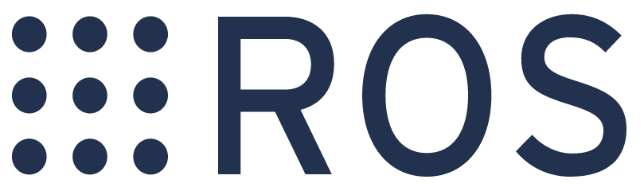
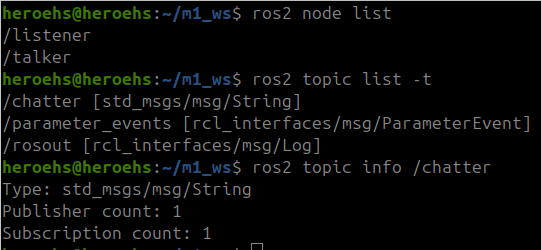
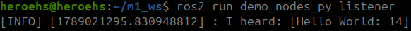

ROS2 로봇 프로그래밍 기초
2026.09.11 | 정혜원
ROS2 로봇 프로그래밍 기초
01
01 Orientation
오늘 수업의 목표
ROS2를 전부 배우는 시간이 아니라, 실습을 시작하기 위한 구조를 잡는 시간
ROS2를 처음 보는 학생
• Ubuntu, VS Code, Terminal이 뭔지 이해한다.
• Workspace, Package, Node가 어떤 관계인지 설명할 수 있다.
• 기본 CLI로 현재 ROS 시스템 상태를 확인해볼 수 있다.
ROS2를 조금 써본 학생
• 평소 쓰던 용어를 다시 정확히 정리한다.
• Topic, Service, Action을 구분한다.
• 협업과 디버깅 상황에서 필요한 기본 확인법을 복습한다.
목표: 코드 문법을 많이 외우는 것보다, ROS2 시스템을 읽고 확인하는 눈을 만든다.
ROS2 로봇 프로그래밍 기초
02
01 Orientation
요즘 개발 환경에서 더 중요해진 것
코드 생성 도구가 좋아져도, 구조를 이해하고 결과를 확인하는 능력은 개발자의 몫
코드 초안 생성
→
실행
→
확인
→
디버깅
도구가 잘해주는 일
• 반복적인 패키지/노드 코드 초안 작성
• 간단한 오류 메시지 해석과 수정
• 기존 예제 코드를 바탕으로 빠르게 변형
개발자가 알아야 하는 일
• 어떤 Node가 필요한지 설계
• 어떤 Topic/Service/Action을 써야 하는지 판단
• 실행 후 node/topic/message를 직접 확인
ROS2 로봇 프로그래밍 기초
03
02 Why ROS
로봇은 왜 복잡한가
센서
상태와 환경 인지
구동부
로봇을 실제로 움직임
제어부
명령과 판단 수행
구조부
기구·프레임 구성
전원부
전원 공급과 출력 관리
통신부
내부·외부 연결
ROS2 로봇 프로그래밍 기초
04

02 Why ROS
기능을 나누어 개발하기
카메라, AI, 제어, 모터를 모두 한 코드에 넣으면 수정·교체·디버깅이 어려워진다.
한 코드에 모두 넣는 방식
Camera + AI + Control + Motor
문제점
• 한 부분만 수정해도 전체에 영향을 줄 수 있다.
• 문제가 발생한 위치를 찾기 어렵다.
• 역할별로 협업하기 어렵다.
ROS2 방식
Camera
→
AI
→
Control
→
Motor
장점
• 기능별로 Node를 나눌 수 있다.
• 필요한 데이터만 Message로 주고받는다.
• 일부 기능을 수정하거나 교체하기 쉽다.
ROS2 로봇 프로그래밍 기초
05
03 Development Environment
오늘 사용할 개발환경 큰 그림
운영체제 위에 ROS2를 설치하고, VS Code와 Terminal로 작성·실행·확인한다.
Ubuntu
24.04 LTS
→
ROS2
Jazzy
→
Workspace
→
Package
→
Node
VS Code
코드를 작성하고 파일 구조를 확인하는 편집기
Terminal
build, source, run, CLI 확인을 수행하는 기본 창
ROS2 로봇 프로그래밍 기초
06
03 Development Environment
Visual Studio Code란 무엇인가
VS Code는 ROS 코드를 작성하고, 파일 구조와 터미널을 함께 볼 수 있는 코드 편집기이다.
VS Code에서 보는 것
• Workspace와 Package의 폴더 구조
• Python 또는 C++ 소스 코드
• package.xml, setup.py, CMakeLists.txt 같은 설정 파일
• 내장 터미널을 통한 실행 결과
주의할 점
VS Code가 ROS를 대신 이해해주는 것은 아니다.
코드를 편하게 보고 수정하게 해주는 도구일 뿐이며, 실제 실행과 확인은 ROS 구조와 터미널 명령어를 이해해야 가능하다.
ROS2 로봇 프로그래밍 기초
07

03 Development Environment
Terminal이란 무엇인가
명령어를 입력해 컴퓨터를 제어하는 텍스트 기반 인터페이스
터미널의 역할
• 현재 위치와 파일 구조를 확인한다.
• 프로그램을 build하고 실행한다.
• 실행 중인 ROS 시스템을 CLI로 관찰한다.
• 에러 로그를 바로 확인한다.
$ pwd # 현재 위치
$ ls # 파일/폴더 확인
$ cd src # 폴더 이동
$ ros2 ... # ROS2 명령어
ROS2 로봇 프로그래밍 기초
08
03 Development Environment
Ubuntu란 무엇인가
Ubuntu는 Linux 기반 운영체제이자 개발 플랫폼이다.
운영체제
• 컴퓨터의 하드웨어와 프로그램 실행을 관리한다.
• 파일, 프로세스, 네트워크, 권한 같은 기본 자원을 다룬다.
• Windows처럼 컴퓨터를 쓰기 위한 기본 환경이다.
Linux 기반
• Ubuntu는 Linux 계열 운영체제이다.
• 오픈소스 소프트웨어와 패키지 생태계를 사용한다.
• 개발 도구, 서버, 로봇 환경에서 많이 사용된다.
ROS2에서의 의미
• ROS2 Jazzy 실습의 기준 작업 환경이다.
• apt 패키지 설치와 터미널 기반 작업에 적합하다.
• ROS2 공식 튜토리얼과 예제가 Ubuntu 기준으로 많이 제공된다.
이 수업에서 Ubuntu는 깊게 배우는 대상이 아니라, ROS2를 설치하고 실행하는 Linux 기반 개발 환경으로 이해한다.
ROS2 로봇 프로그래밍 기초
09

04 ROS2 Basics
ROS2란 무엇인가
ROS2는 ROS 소프트웨어 두 번째 버전이며, 로봇 개발용 라이브러리·도구 집합이다.
설명
• ROS는 전통적인 컴퓨터 운영체제가 아니다.
• 로봇 프로그램 개발을 돕는 라이브러리와 도구 모음이다.
• 로봇의 여러 부분이 서로 통신하도록 돕는 framework 역할을 한다.
이 수업에서의 의미
ROS2는 로봇 기능을 Node로 나누고, Topic·Service·Action 같은 인터페이스로 연결하며, CLI 도구로 실행 상태를 확인할 수 있게 해주는 로봇 개발 프레임워크이다.
핵심 단어: Node, Interface, Message, Topic, Service, Action, Parameter, CLI
ROS2 로봇 프로그래밍 기초
10

04 ROS2 Basics
ROS2를 이해하는 문장
ROS2는 “여러 Node가 인터페이스를 통해 Message를 주고받으며 로봇 애플리케이션을 구성하는 구조”이다.
Camera
Node
→
/image
Topic
→
Vision
Node
→
/target
Topic
→
Control
Node
ROS2 로봇 프로그래밍 기초
11
04 ROS2 Basics
ROS 개발 구조 큰 그림
ROS2 프로젝트는 보통 Workspace 안에 Package를 만들고, Package 안에 Node와 설정 파일을 둔다.
Workspace
→
src/
→
Package
→
Node
→
Message
my_ws/
├─ src/
│ └─ robot_control/
│ ├─ package.xml
│ ├─ setup.py
│ └─ robot_node.py
├─ build/
├─ install/
└─ log/
ROS2 로봇 프로그래밍 기초
12
04 ROS2 Basics
Workspace란 무엇인가
Workspace는 ROS 프로젝트와 패키지들을 모아 두는 작업 공간이다.
역할
• 하나의 실습 또는 프로젝트 단위를 담는다.
• 여러 Package를 함께 build할 수 있다.
• 보통 src 폴더 안에 패키지를 둔다.
자주 보게 되는 폴더
• src/ 패키지들이 들어가는 곳
• build/ 소스 코드를 실행 가능한 형태로 만드는 과정에서 사용하는 작업 폴더
• install/ 실행에 필요한 결과물이 준비되는 곳
• log/ 빌드 로그와 에러 확인용 파일
처음에는 “Workspace = ROS 프로젝트 폴더” 정도로 이해하고 시작해도 충분하다.
ROS2 로봇 프로그래밍 기초
13
04 ROS2 Basics
Package란 무엇인가
Package는 Node, 설정 파일, 실행 정보를 묶어 놓은 단위이다.
Package 안에 들어가는 것
• 실행할 Node 코드
• 의존성 정보 : 어떤 ROS 라이브러리를 쓰는가
• 빌드/설치 정보 : 어떻게 실행 가능하게 만들 것인가
robot_control/
├─ package.xml
├─ setup.py 또는 CMakeLists.txt
├─ resource/
└─ robot_control/
└─ robot_node.py
ROS2 로봇 프로그래밍 기초
14
04 ROS2 Basics
Node란 무엇인가
Node는 ROS2에서 실제로 실행되는 하나의 프로그램이며, 보통 하나의 역할을 담당한다.
정의
• Node = ROS 시스템 안에서 실행되는 역할 단위
예를 들어 카메라를 읽는 프로그램, 이미지를 처리하는 프로그램, 모터에 명령을 보내는 프로그램을 각각 다른 Node로 만들 수 있다.
camera
node
→
vision
node
→
control
node
→
motor
node
ROS2 로봇 프로그래밍 기초
15
Message는 Node 사이에서 주고받는 실제 데이터이며, Message Type은 그 데이터가 어떤 필드와 자료형으로 구성되는지 정의한다.
Message와 Message Type
Twist 예시
• Message는 ROS2 통신에서 실제로 전달되는 데이터이다.
• Message Type은 Message에 어떤 필드가 있고, 각 필드가 어떤 자료형인지 정의한다.
• Message Type은 Message에 어떤 필드가 있고, 각 필드가 어떤 자료형인지 정의한다.
• 같은 Message Type이라도 실제 Message에 들어가는 값은 달라질 수 있다.
• 실습에서는 /cmd_vel Topic으로 Twist Message를 주고받는다.
핵심 구분: Message Type = 형식, Message = 실제 값
geometry_msgs/msg/Twist ← Message Type
linear : geometry_msgs/msg/Vector3
x : float64
y : float64
z : float64
angular : geometry_msgs/msg/Vector3
x : float64
y : float64
z : float64
실제 Message 예:
linear.x = 0.5
angular.z = 0.2
ROS2 로봇 프로그래밍 기초
16
04 ROS2 Basics
Message란 무엇인가
05 Communication
Topic: Publish / Subscribe 통신
Topic은 Node들이 Message를 교환하기 위해 사용하는 통신 인터페이스이다.
정확한 구조
• Topic은 Publish / Subscribe pattern을 사용한다.
• Publisher는 특정 Topic에 Message를 publish한다.
• Subscriber는 같은 Topic을 subscribe하여 Message를 받는다.
• 여러 Publisher와 Subscriber가 같은 Topic을 공유할 수 있다.
Publisher
Node
→
/scan
Topic
→
Subscriber
Node
$ ros2 topic list -t
$ ros2 topic info /scan
$ ros2 topic echo /scan
$ ros2 interface show sensor_msgs/msg/LaserScan
Topic 이름과 Message Type은 함께 확인한다
ROS2 로봇 프로그래밍 기초
17
publish
subscribe
05 Communication
Service: Request / Response 통신
Service는 짧은 작업을 요청하고 결과를 받기 위한 Request / Response 통신 인터페이스이다.
정확한 구조
• Client가 Service Server에 Request를 보낸다.
• Server는 요청을 처리하고 Response를 반환한다.
• Topic처럼 지속적으로 subscribe하는 구조가 아니다.
• 서비스 정의(.srv)는 Request 구조와 Response 구조를 함께 가진다.
Service
Client
→
Request
→
Service
Server
→
Response
$ ros2 service list -t
$ ros2 service type /reset
$ ros2 interface show std_srvs/srv/Empty
$ ros2 service call /reset std_srvs/srv/Empty "{}"
짧은 요청을 보내고 결과 확인이 필요하면 Service
ROS2 로봇 프로그래밍 기초
18
05 Communication
Action: Goal / Feedback / Result 통신
Action은 시간이 걸리는 작업을 Goal, Feedback, Result로 다루는 통신 인터페이스이다.
정확한 구조
• Action Client가 Action Server에 Goal을 보낸다.
• Server는 작업 중 Feedback을 보낼 수 있다.
• 작업이 끝나면 Result를 반환한다.
• 필요하면 실행 중인 Goal을 취소할 수 있다.
Action
Client
Goal →
Action
Server
←
Feedback
Result
예: turtlesim에서 /turtle1/rotate_absolute Action은 거북이를 목표 각도까지 회전시키고, 완료되면 결과를 반환한다.
$ ros2 action list
$ ros2 action info /turtle1/rotate_absolute
$ ros2 action send_goal /turtle1/rotate_absolute
turtlesim/action/RotateAbsolute "{theta: 1.57}"
ROS2 로봇 프로그래밍 기초
19
05 Communication
Parameter: Node의 설정값
Parameter는 Node에 연결된 configuration value, 즉 Node 설정값이다.
정확한 의미
• Parameter는 Topic/Service/Action처럼 Node 사이의 인터페이스가 아니다.
• 각 Node는 자기 설정값을 key-value 형태로 가진다.
• bool, integer, double, string, array 값을 가질 수 있다.
• 시작 시점이나 실행 중에 값을 확인·변경할 수 있다.
확인 예시
$ ros2 param list
$ ros2 param get /turtlesim background_g
Integer value is: 86
$ ros2 param set /turtlesim background_r 150
Set parameter successful
Parameter는 “Node의 설정값”이며, 통신 모델이 아니라 관리 대상이다
ROS2 로봇 프로그래밍 기초
20
05 Communication
Topic / Service / Action / Parameter 비교
구분
Topic
Service
Action
Parameter
정확한 의미
Message를 전달하는
이름 있는 통신 경로
짧은 작업의
Request / Response
시간이 걸리는 작업의
Goal / Feedback / Result
Node에 연결된
configuration value
역할
Publisher
Subscriber
Client
Server
Action Client
Action Server
Node별 보유
데이터 구조
.msg
예: String, Twist
.srv
Request / Response
.action
Goal / Feedback / Result
key-value
예: background_r
대표 예
/chatter, /scan
/turtle1/cmd_vel
/reset, /clear
/spawn
/turtle1/rotate_absolute
목표 각도 회전
속도 제한
센서 옵션
배경색
ROS2 로봇 프로그래밍 기초
21
06 Development Flow
ROS2는 어떤 언어로 만들까
ROS2 Node는 C++로도 만들 수 있고 Python으로도 만들 수 있다.
C++ / rclcpp
• 실행 속도가 빠르고 성능 최적화에 유리하다.
• 하드웨어 driver, 제어기처럼 성능이 중요한 부분에서 많이 사용한다.
• 빌드 설정과 컴파일 개념이 중요하다.
Python / rclpy
• 코드가 간단하고 수정하기 쉽다.
• 빠르게 만들고 테스트하기 좋다.
• AI, 데이터 처리, 교육용 예제와 연결하기 좋다.
이번 수업에서는 Python을 중심으로 실습한다. 하지만 Message와 Topic을 맞추면 서로 다른 언어의 Node도 통신할 수 있다.
ROS2 로봇 프로그래밍 기초
22
06 Development Flow
ROS 프로그램 개발 흐름
실습에서는 같은 흐름을 반복한다: 코드를 작성하고, build하고, source로 현재 Terminal 환경을 적용하고, 실행한 뒤 CLI로 확인한다.
code
작성
→
colcon
build
→
source
→
ros2
run
→
CLI로
확인
→
수정
에러가 나도 이 순서 안에서 원인을 찾으면 된다.
예: 빌드를 안 했는가? source를 안 했는가? package/node 이름이 맞는가? topic이 실제로 흐르는가?
ROS2 로봇 프로그래밍 기초
23
06 Development Flow
Build란 무엇인가
Build는 작성한 코드를 ROS2에서 실행할 수 있도록 준비하는 과정이다.
무엇을 하는가
• C++ 코드는 컴파일해서 실행 파일을 만든다.
• Python 코드는 package 실행 정보를 준비한다.
• Workspace 안의 여러 Package를 함께 처리할 수 있다.
$ cd ~/my_ws
$ colcon build --symlink-install
build를 했다는 것은 “내가 만든 코드를 ROS2가 실행할 수 있게 준비했다”는 뜻이다.
자주 생기는 실수
• 코드를 수정했는데 build를 다시 하지 않았다.
• 다른 Terminal에서 이전 환경을 보고 있다.
ROS2 로봇 프로그래밍 기초
24
06 Development Flow
Source란 무엇인가
source는 ROS2 명령어가 아니라, 현재 shell에 setup 파일의 내용을 적용하는 shell builtin 명령어이다.
정확한 의미
• 새 Terminal을 열면 새로운 shell 환경이 시작된다.
• source setup.bash는 setup 파일을 현재 shell 안에서 읽어 환경 변수를 적용한다.
• source를 안 하면 설치되어 있어도 현재 Terminal은 모를 수 있다.
$ source /opt/ros/jazzy/setup.bash
$ source ~/my_ws/install/setup.bash
$ echo $ROS_DISTRO
jazzy
build는 실행 결과물을 준비한다.
source는 현재 Terminal이 결과물을 찾도록 환경 변수를 적용한다.
증상 예시
• ros2: command not found
• package not found
• executable not found
• 새 Terminal에서만 실행되지 않는다.
ROS2 로봇 프로그래밍 기초
25
06 Development Flow
Run: Node 실행하기
build와 source가 끝나면 ros2 run으로 특정 Package의 특정 Node를 실행한다.
$ ros2 run <package_name> <node_name>
예시
$ ros2 run turtlesim turtlesim_node
$ ros2 run turtlesim turtle_teleop_key
기억할 구조
ros2 run은 “패키지 안에 등록된 실행 가능한 Node를 실행한다”는 의미이다.
따라서 package 이름과 node 이름을 구분해서 기억해야 한다.
실습에서는 여러 터미널을 동시에 사용한다. 예를 들어 한 터미널에서 simulator node를 실행하고, 다른 터미널에서 teleop node를 실행할 수 있다.
ROS2 로봇 프로그래밍 기초
26
07 CLI
공식 예제로 CLI 결과 확인하기
talker와 listener를 실행한 뒤, CLI로 관찰한다.
1 talker 실행
$ source /opt/ros/jazzy/setup.bash
$ ros2 run demo_nodes_cpp talker
2 listener 실행
$ source /opt/ros/jazzy/setup.bash
$ ros2 run demo_nodes_py listener
3 Node 확인
$ ros2 node list
/listener
/talker
4 Topic / Type 확인
$ ros2 topic list -t
$ ros2 topic info /chatter
ROS2 로봇 프로그래밍 기초
27



<- -t : type까지 ros2 topic list 출력
<- Parameter 변경 알림용 ROS2 시스템 Topic
<- Publisher endpoint가 1개 있다는 뜻
/chatter에는 Publisher 1개와 Subscription 1개가 연결되어 있다.
<- 로그 전달용 ROS2 시스템 Topic
07 CLI
로봇이 안 움직일 때 어디부터 볼까
현상만 보고 바로 코드를 고치기보다, 상태가 정상인지 먼저 확인한다.
1
필요한 Node가 실행 중인가?
ros2 node list
2
원하는 Topic이 존재하는가?
ros2 topic list
3
그 Topic에 실제 데이터가 전달되고 있는가?
ros2 topic echo /topic_name
4
Node의 연결 관계가 맞는가?
ros2 node info /node_name
이 흐름을 익히면, 직접 작성한 코드가 아니어도 시스템을 분석하고 질문할 수 있다.
ROS2 로봇 프로그래밍 기초
28
08 Wrap-up
요즘 ROS 개발에서 중요한 것
도구가 코드를 빠르게 만들어줄 수 있어도, 개발자는 구조와 검증을 이해해야 한다.
코드 생성 도구에게 맡겨도 되는 것
• Package와 Node 코드 초안 생성
• Publisher/Subscriber boilerplate 작성
• 에러 메시지 기반 수정 후보 제안
• 반복적인 설정 파일 작성 보조
개발자가 기본적으로 알아야 하는 것
• Node를 어떻게 나눌지 판단
• Topic/Service/Action 중 무엇을 쓸지 판단
• build/source/run 흐름 이해
• CLI로 실행 결과를 직접 확인
결론: ROS2 기초는 “코드를 전부 직접 치기 위해서”가 아니라, 시스템을 이해하고 확인하기 위해 배운다.
ROS2 로봇 프로그래밍 기초
29
08 Wrap-up
오늘의 정리
ROS2를 처음 시작할 때 가장 중요한 것은 전체 구조를 읽는 눈이다.
1
ROS2는 로봇 애플리케이션을 만들기 위한 라이브러리·도구·통신 프레임워크이다.
2
Topic은 Pub/Sub, Service는 Request/Response, Action은 Goal/Feedback/Result, Parameter는 Node 설정값이다.
3
build → source → run → CLI 확인 흐름을 반복하며 현재 Terminal 환경과 ROS Graph를 함께 확인한다.
4
Topic 이름과 Message Type을 구분해야 Node 사이의 연결을 정확히 읽을 수 있다.
ROS2 로봇 프로그래밍 기초
30
Q&A
ROS2 로봇 프로그래밍 기초
31